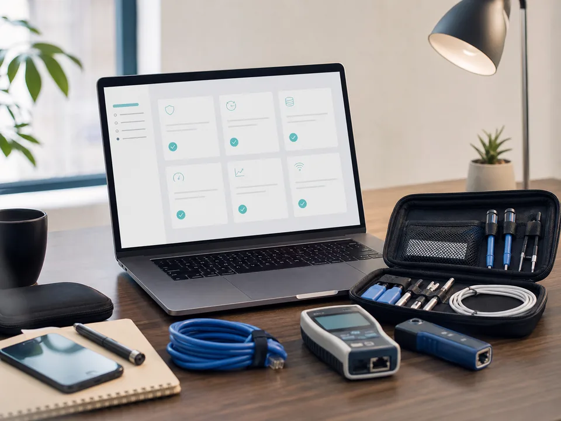

Custom Business Websites
Professional, responsive websites designed around your services, customers, brand, and goals rather than a generic template.
One-page sites, business websites, portfolios, galleries, redesigns, and landing pages.
Mount Forest, Wellington County, and remote-friendly support
Phylia Consulting helps small businesses build a professional online presence, improve how inquiries are handled, and set up the technology they rely on every day.
About Phylia
A website should do more than look good. It can collect useful information, connect to business systems, and work alongside reliable networking, Wi-Fi, voice, email, and other essential tools.
What I Help With
Projects can start with a website, a specific technology problem, or a connected system that brings several pieces together.
Professional, responsive websites designed around your services, customers, brand, and goals rather than a generic template.
One-page sites, business websites, portfolios, galleries, redesigns, and landing pages.
Contact, quote, intake, and request forms connected to email, notifications, databases, dashboards, or a lightweight CRM.
Built to collect the right information and send it where it needs to go.
Small-business network setup, Wi-Fi planning and troubleshooting, business phone and voice-system setup, and provider coordination.
Practical support for reliable connectivity and day-to-day communications.

Website updates, domains, DNS, business email, Cloudflare, forms, integrations, troubleshooting, documentation, and related IT help.
Focused support without requiring a full managed-IT contract.
Service area: On-site support is available in Mount Forest and surrounding communities. Website, systems, provider coordination, and many troubleshooting projects can also be completed remotely.
Recent Work
Each project is designed around the business, its customers, and the practical information people need before they call or request a quote.
A custom industrial website presenting machining capabilities, equipment, repair services, and a clear path for prospective customers to request a quote.
Visit the live websiteA polished home-staging website that explains services and pricing, highlights professional qualifications, showcases completed work, and makes contact information easy to find.
Visit the live websiteWhat This Can Look Like
Work can stay simple or connect the website, customer inquiries, communications, and internal tools.
Starter websiteA clear one-page site for a small business that needs a credible online presence quickly.
Business websiteA mobile-friendly multi-page site that explains services and makes it easy to contact you.
Smart quote formA structured form that collects the details, photos, or project information needed for a response.
Network and Wi-FiA practical setup or troubleshooting plan for reliable office, shop, or customer connectivity.
Business voiceHelp selecting, configuring, or troubleshooting phone and voice services with provider coordination.
Connected workflowWebsite submissions delivered to email, a CRM, dashboard, or approval-first response process.
About Phylia
Phylia Consulting brings website design, business systems, connectivity, and technical support together under one practical service. The company works with small businesses in Mount Forest, Wellington County, surrounding communities, and remotely.
Every project starts with the business need, not a predetermined software package. Solutions are scoped clearly, connected carefully, tested, and documented so they remain useful and manageable after launch.
How It Works
The project is scoped around what you need now, with room to add integrations, support, or improvements later.
We identify what needs to work, what you already have, and what the finished result should accomplish.
I create or configure the website, form, workflow, network, Wi-Fi, voice, or related system.
We test the full setup, complete revisions within the agreed scope, launch or install it, and document what you need to know.
Project Options
Prices are in Canadian dollars. Final pricing depends on pages, content readiness, integrations, revisions, and technical requirements.
Starting at $650 CAD
A focused, responsive one-page website with business information, services, contact details, basic SEO, and launch support.
Best for new or very small businesses that need a professional online presence.
Starting at $1,000 CAD
A custom multi-page website with mobile optimization, essential SEO, one standard contact form, domain connection, and launch support.
Includes an agreed scope and up to two revision rounds.
Starting at $1,400 CAD
A custom website with quote, intake, booking, or request forms connected to email, notifications, a database, or another business tool.
Advanced integrations, ecommerce, and custom systems are quoted separately.
Starting at $75 CAD/month
Routine updates, basic monitoring, minor content changes, and form checks. Larger changes and new features are quoted separately.
Optional, but recommended for businesses that want ongoing support.
Network, Wi-Fi, voice, CRM, automation, troubleshooting, and other IT work are quote-based. Additional pages, major design changes, integrations, ecommerce, custom features, and work requested after approval are quoted separately.
Frequently Asked Questions
A custom mobile-friendly site, agreed core pages, one standard contact form, essential SEO, testing, domain connection, launch support, and up to two revision rounds.
The final price depends on the number of pages, content, design complexity, integrations, and revisions. You receive a clear scope and quote before work begins.
Usually not. I can help register or connect the domain and recommend a suitable hosting setup. Third-party charges are explained before the project begins.
Yes. Forms can send notifications, save structured information, feed a dashboard or CRM, and support approval-first follow-up workflows.
A focused project may be built within one to several weeks. Timing depends heavily on content readiness, integrations, feedback, and how quickly approvals are provided.
No. Maintenance is optional, but recommended if you want routine updates, monitoring, minor changes, and help when forms or integrations need attention.
Yes. I can help with small-business network setup, Wi-Fi planning and troubleshooting, business phone and voice configuration, and provider coordination.
Services can include domains, DNS, business email, Cloudflare, connectivity, business tools, integrations, troubleshooting, documentation, and related technical setup.
Tell Me What You Need
Describe the problem or goal in your own words. You do not need to know the technical solution before contacting me.